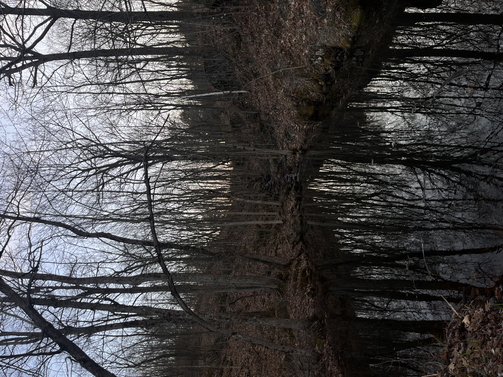

Welcome to the trails page
Jump to Hiking Videos
Old Quarry Trail.
Mud Lake Trail
Mer Bleue Bog
Sentier du Mont-King
Chelsea Community Trail
Waterfall Trail
Riverwood Trails.
Meadowale Conservation Area
Rattray Marsh Conservation Area
Lemoine Point Conservation Area
Little Cataraqui Creek Conservation Area
Rock Dunder Nature Reserve